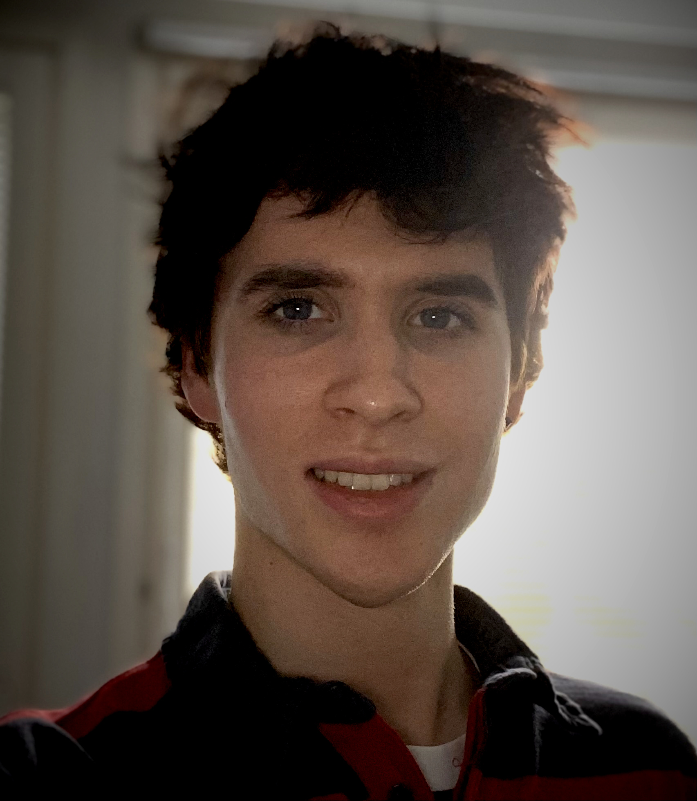

Olen toisen vuoden insinööriopiskelija Jyväskylän ammattikorkeakoulun IT-instituutissa. Parhaimpiin osaamisalueisiini kuuluu full stack -ohjelmointi, Bash/PowerShell-scriptaaminen, web-kehitys ja 3D-mallinnus. Olen aina valmis oppimaan uutta alallani ja tavoitteeni on valmistua syksyllä 2025.
